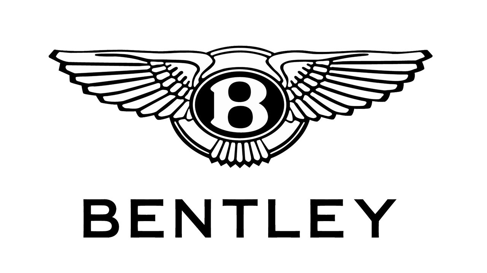
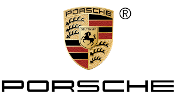
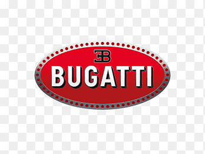
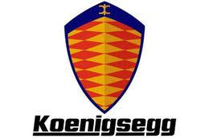
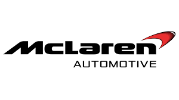
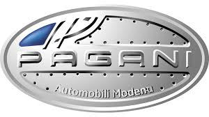
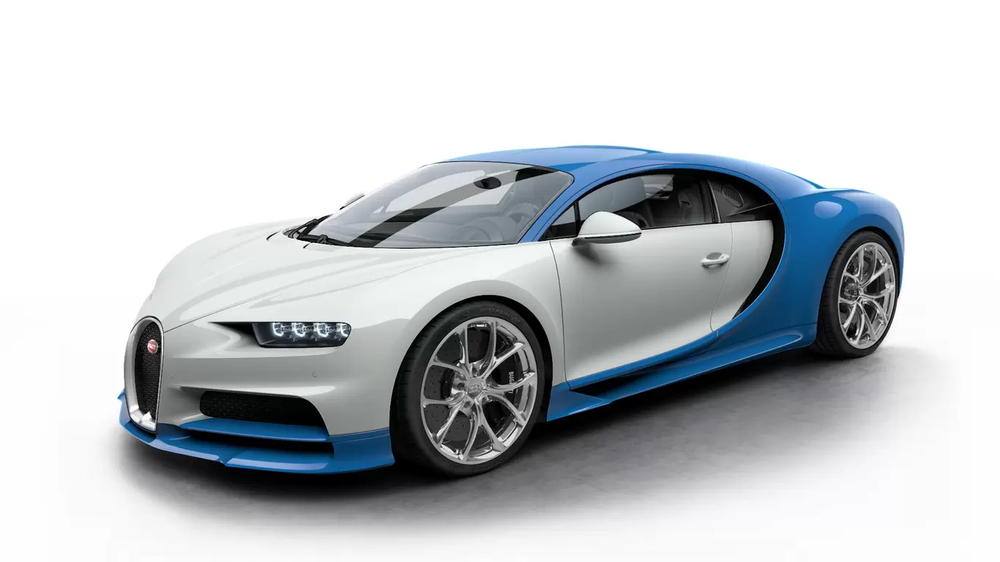
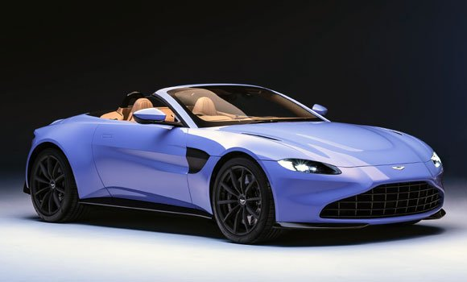

AUTOS DE LUJO
 Rolls Royce
Rolls Royce Audi
Audi BMW
BMW Ferrari
Ferrari Lamborghini
Lamborghini Mercedes Benz
Mercedes Benz| Bentley | Rolls Royce |
Porshe | Audi |
BMW |
Bugatti | Ferrari |
Koenigsegg | Lamborghini |
McLaren | Mercedes Benz |
Pagani |
|  | LUJO, CONFORT Y COMODIDAD El CHIRON es el superdeportivo de producción más rápido, potente y exclusivo de la historia de BUGATTI. Su diseño sofisticado, tecnología innovadora y forma icónica orientada al rendimiento lo convierten en una obra maestra única de arte, forma y técnica, que traspasa los límites más allá de la imaginación. BUGATTI debe su carácter distintivo a una familia de artistas e ingenieros, y siempre se ha esforzado por ofrecer lo extraordinario, lo inigualable, lo mejor. Cada elemento del CHIRON es una combinación de reminiscencias de su historia y la tecnología más innovadora. El resultado es una creación única de valor duradero y un logro automotriz impresionante. |
EL PRIMER MEGA-GT DEL MUNDO Y EL PRIMER KOENIGSEGG DE CUATRO PLAZAS El Gemera tiene capacidad para cuatro adultos grandes cómodamente con espacio para su equipaje de mano, lo que significa que la experiencia del megacar Koenigsegg se puede compartir con familiares y amigos. La noción detrás del nombre de Gemera - una combinación de las dos palabras suecas - "ge" (dar) y "mera" (más) significa "dar más". Un nombre adecuado para un automóvil que agrega características y funciones sin quitar nada que lo convierta en un verdadero megacoche. No es frecuente que se pueda decir que se ha creado una nueva categoría de automóvil. Pero en el caso de la Gemera hay que creerlo: el Mega-GT. La Gemera está limitada a una edición de 300 coches. Máximo rendimiento Desde el nacimiento de la empresa hace más de 25 años, Koenigsegg se ha impulsado a crear el coche de rendimiento definitivo. A pesar de ser un cuatro plazas, el Gemera supera fácilmente a la mayoría de los megacoches de dos plazas, tanto de combustión como eléctricos. Aún así, el enfoque de la Gemera es tomar las carreteras públicas de largo alcance: viajes familiares, con comodidad, estilo y seguridad con un rendimiento nunca antes experimentado. |
 |
VISIÓN GENERAL El Huayra está compuesto por más de 4000 componentes (motor y caja de cambios no incluidos). Crearlos y armarlos requiere creatividad, paciencia y pasión que compartí con un fantástico equipo joven y con el socio más competente en todos los sectores. Al definir el tamaño, pensé de inmediato en un automóvil que sería más largo que el Zonda, una pista aumentada en 70 mm, una posición de la cabina desplazada 40 mm hacia atrás e incluso más espaciosa. La silueta debe ser suave, fácil de leer y formarse a partir de líneas delgadas y elegantes que tengan un comienzo y un final claros. En lo que al estilo se refiere durante estos cinco años hemos tratado de encontrar el mejor compromiso trabajando sobre 8 maquetas y 2 maquetas a escala real, así como cientos de dibujos sin dejar nunca la idea original y cuidando meticulosamente los detalles. |
REGLAS REESCRITAS El nombre Rolls-Royce siempre ha sido sinónimo de los niveles más exigentes de artesanía. Ahora, Phantom eleva esto a nuevos niveles de arte. Una primicia mundial en diseño automotriz, un solo panel de vidrio se extiende por toda la fascia para albergar una galería única que exhibe obras de arte a medida de su elección. El fantasma es el lienzo para tus gustos y deseos: el grano es tuyo para ir a favor o en contra.El cuero de calidad A más fino del mundo. Alfombrillas de lana de cordero que miman los pies. Enchapados de madera hechos a mano por favor mire y toque. Maestros artesanos han trabajado los mejores materiales para crear un acabado que va más allá de lo exquisito. Esta es la Suite Phantom. Tu santuario. Tu espacio para reescribir las reglas. |
 |
|  | VISIÓN GENERAL New Vantage tiene el lenguaje de diseño más poderoso y provocativo jamás visto en un Vantage. Un cazador, liviano y por lo tanto liviano en su lenguaje visual. Los principios de pureza y hermosa proporción de Aston Martin permanecen inalterables. Si bien Vantage ha logrado avances significativos, aún se pueden ver ecos de la magnífica línea de sangre. Desde que se lanzó la placa de identificación en la década de 1950 como una actualización del DB2, Vantage ha sido sinónimo de rendimiento, convirtiéndose en nuestro automóvil deportivo insignia. La sensación distintiva de la cabina del interior es de absoluta concentración y funcionalidad. Una posición de conducción más baja crea una experiencia más inmersiva, conectando íntimamente al conductor con el automóvil y la carretera por delante.Hoja de Contacto |